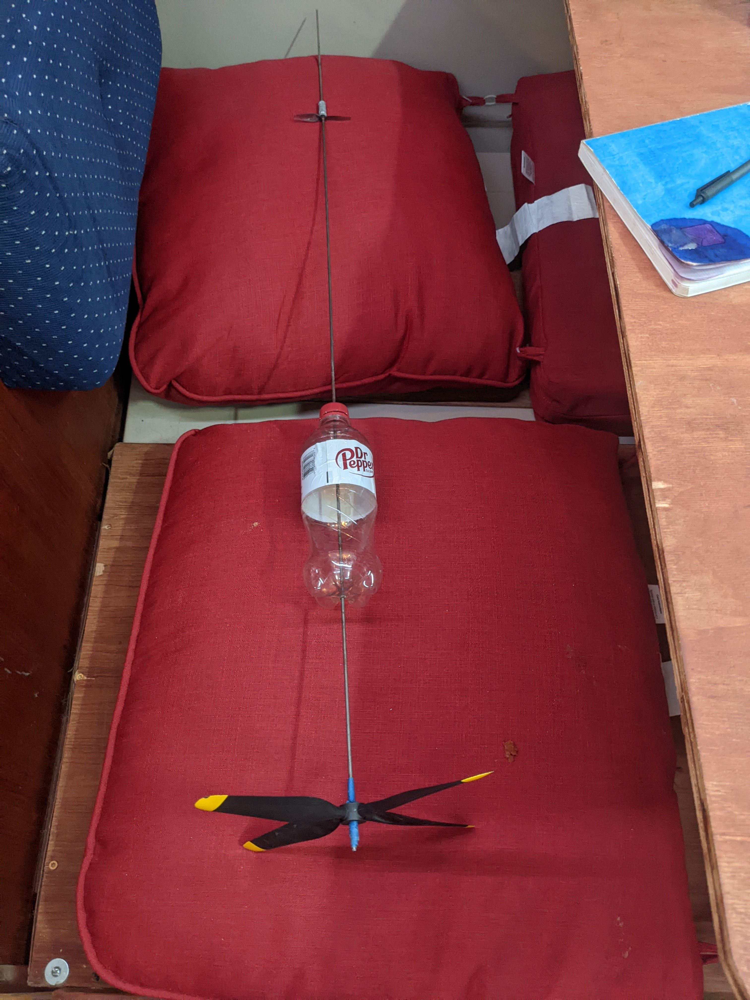
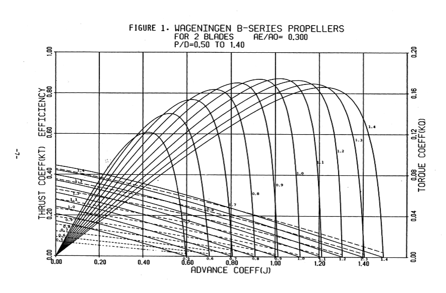
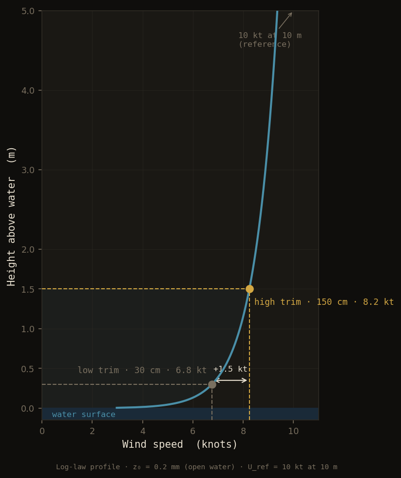

Not tacking. Not at an angle — straight into it, powered by the same wind it's fighting.
A turbine on deck captures wind energy and converts it to shaft power. That power drives an underwater propeller. Done right, the propulsive force exceeds the turbine's own drag, and the boat makes headway directly upwind.
This is a working experiment, not a thought experiment.
scroll to see how
Act I · The concept
The turbine is the engine. The wind is the fuel.
When a boat moves directly into the wind, it meets the wind head-on. The faster it goes, the harder the wind hits — the apparent wind compounds with boat speed. Most boats fight this. This one uses it.
A turbine on top of the boat faces into the apparent wind. As the boat moves forward, apparent wind increases, the turbine spins harder, more shaft power flows to an underwater propeller. There is positive feedback built into the physics.
Power path
Apparent wind
──→
Turbine
──→
Shaft
──→
Propeller
──→
Thrust forward
Antithrust
←──
The turbine pushes backward as it extracts energy. The boat must overcome this before moving at all.
Hull drag
←──
Water resistance, growing with the square of speed.
The catch: extracting energy from the wind creates a backward force — antithrust. The turbine is also a brake. The boat only moves forward if the propeller's thrust exceeds antithrust plus hull drag.
That single condition — thrust > antithrust + hull drag — is the entire design problem. Every parameter in the model below feeds into it.
The model underneath comes from actuator disk theory: the same framework used to analyze helicopter rotors and wind farm turbines, applied here to a two-stage machine where the turbine and propeller share a shaft. The equilibrium boat speed is where the forces balance exactly.
Act II · The builds
Three iterations. One approach that worked.
The first question in any experimental concept is whether the physics holds up outside a spreadsheet. That was the only goal of the first build.
Build 01
Proof of concept
✓ worked

Built from scrap metal and a neighbor's old RC aircraft with drone propellers. It works on the water — but not well. The turbine spun fast and the boat went almost nowhere. The propeller wasn't tuned for the turbine, which is exactly what led to the matching model in Act III.
Build 02
Dinghy scale-up
✗ failed
The dinghy already had an electric motor well-matched to the hull. The plan was simple: add a turbine to power the motor and let each spin at whatever speed it needed. No mechanical coupling, no gearbox — just electricity in between.
Two things ended it. The first was safety. The turbine sat directly overhead — sharp fiberglass blades whirring a foot above your head, with nothing between you and them except the electric speed controller. You had to just trust the brakes.
The second was losses. Mechanical to AC to DC to switching AC back to mechanical was too many conversions. Then a phase in the wiring opened up and the whole system malfunctioned. That was the end of it.
It did show something interesting. All that heavy metal mounted high up made the boat unstable in a way a sailboat isn't. Hit a gust on the beam and the boat would slowly start to tip — then accelerate quickly once the turbine spun up and the antithrust actually killed the apparent wind. Juggling the motor controls while the boat was heeling was not fun.
The lesson: do the math first. Match the propeller. Scale up the bottle design that already worked.
Act III · Propeller geometry
The right propeller for the job.
Once the turbine is sized and the shaft speed is known, there is still a second matching problem: which propeller actually converts that shaft power into thrust efficiently?
Marine propeller performance is catalogued in the Wageningen B-series — a family of charts plotting thrust and torque coefficients against the advance coefficient J, with a separate curve for each pitch-to-diameter ratio P/D.

The advance coefficient J = V / (n·D) measures how far the boat travels per propeller revolution, normalized by diameter. Each curve on the chart represents a different P/D ratio. The humped lines overlaid on both are efficiency curves — each peaks somewhere in the middle of its J range, then falls off on either side.
Two observations from the chart drive the model:
1
Peak efficiency is roughly constant across P/D ratios
The tops of the efficiency humps all land near the same height — approximately 0.85 for a well-matched two-blade propeller. This lets the model treat propeller efficiency as a fixed parameter rather than a function of geometry.
2
Each peak occurs at J ≈ P/D − 0.1
The efficiency peak for the P/D = 0.5 curve lands near J = 0.4. For P/D = 1.0, near J = 0.9. The offset is consistent at about 0.1 across the family. That offset is the slip — s = 0.1.
Rearranging the second observation: a propeller runs at peak efficiency when P/D = J + s. This is the matching condition. Given the advance ratio set by your operating conditions, it tells you exactly which propeller to use.
P/D = J + s
J = V / (n·D) · advance ratios = 0.10 · slip at peak efficiency
In the model, the turbine's tip-speed ratio sets shaft speed: n = λ·V_app / (π·D_turbine). That shaft speed, combined with the boat speed and a propeller diameter solved numerically from the power budget, determines J. The required P/D follows directly — telling you the geometry of the propeller that extracts the available power most efficiently.
Source: Wageningen B-series, 2 blades, Re/A₀ = 0.300, P/D 0.50–1.40
Slip s = 0.10 derived from observed J offset at peak efficiency · η = 0.85 assumed constant
Propeller diameter solved from actuator disk power balance (Brent's method)
Build 03 · In action
Back to the bottle design with the propeller properly matched to the turbine. Two runs, two trim angles — and the difference matters more than you'd expect.
The first video shows the boat trimmed high. The turbine gets up into faster air and spins hard. The propeller is nearly stalled at that angle, but the boat still makes way upwind. The second shows it trimmed low — the turbine is deep in the boundary layer where the wind barely reaches, and it can hardly turn at all.
High angle trim
Low angle trim
The difference is the boundary layer. Wind speed near the water surface follows a logarithmic profile — it drops sharply as you approach the surface, where viscosity and waves slow it down. Even a meter of extra height is worth over a knot of apparent wind.

This is why the 20-foot axle on Build 4 matters. It keeps the turbine well above the cockpit, the 630 mm blades away from people, and cuts out all the conversion losses that killed Build 02. But just as importantly, it puts the turbine high enough in the boundary layer to actually see the wind — which is where the real power gains are.